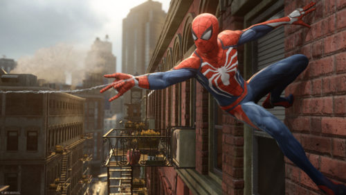
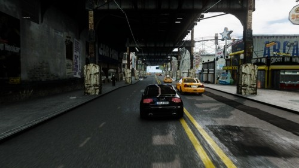
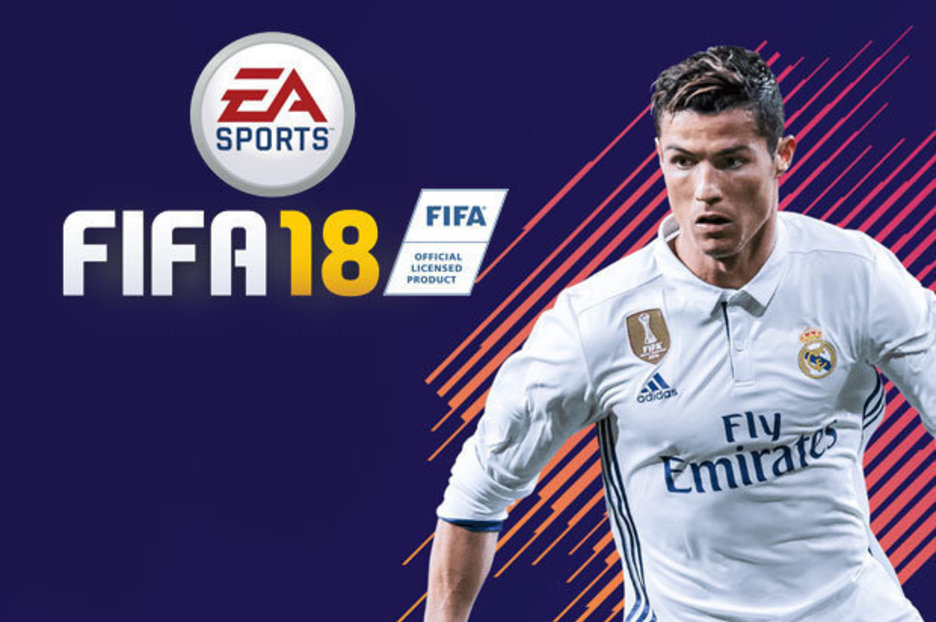
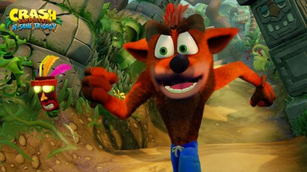

03 de enero 2018
SpiderMan
Peter Parker es un chico de 23 años, becario en un laboratorio Whilst y próximo a graduarse de la universidad.5 Peter ha sido el hombre araña por ocho años y se ha desempeñado como el protector de la Ciudad de Nueva York. En sus comienzos como héroe, Peter logró derrotar a un jefe mafioso llamado Wilson Fisk (alias Kingpin), pero una nueva pandilla conocida como los "Inner Demons" emergió apoderándose de los antiguos territorios de Fisk. El hombre araña llega un día a un edificio en construcción propiedad de Kingpin teniendo que defender a sus hombres, quienes se encontraban bajo ataque de los Inner Demons.6 Tras deshacerse de ellos, Peter descubre que Martin Li, uno de los más prominentes filántropos de Nueva York, es quien lidera a los Inner Demons.
Leer mas...

03 de enero 2018
NEED FOR SPEED
El Need for Speed cuenta con una interesante e innovadora jugabilidad que propone cinco formas diferentes de jugar: Velocidad, Estilo, Diseño, Banda y Forajido. Cada una estará relacionada con un icono de la conducción del mundo real, cinco héroes de la cultura automovilística que inspirarán al jugador a progresar, mejorar su reputación y convertirse en un icono definitivo de las carreras urbanas.
Se contará con una personalización de profundidad, la cultura del automóvil urbano auténtico, un mundo abierto nocturno, y una trama envolvente.
Requiere conexión a internet permanente incluso en modo de un jugador.
Leer mas...

03 de enero 2018
FIFA 2018
La Demo del juego se podrá descargar a partir del próximo 15 de septiembre aunque habrá que esperar una semanas más para poder disfrutar del juego al completo.
Cristiano Ronaldo releva a Lionel Messi en la carátula y se convierte en el nuevo protagonista del videojuego de EA. La empresa reveló la edición definitiva de la portada para la Gamescom de Colonia, la feria europea más importante de los videojuegos.
Leer mas...

03 de enero 2018
CRASH
Como el primer juego de la serie, el juego ofrece solamente nueve personajes. El protagonista del juego es Crash Bandicoot, un bandicoot valiente mutado por el doctor Neo Cortex, que intenta cruzar toda contaminación causada por el doctor y detenerlo en sus planes de la dominación del mundo con la ayuda de aku aku. El doctor Neo Cortex, mientras intenta terminar su última creación usando el Evolvo-Ray y el Cortex Vortex en Crash como uno de sus experimentos, nota que el experimento había ido mal y empieza perseguirlo por su castillo.
Leer mas...